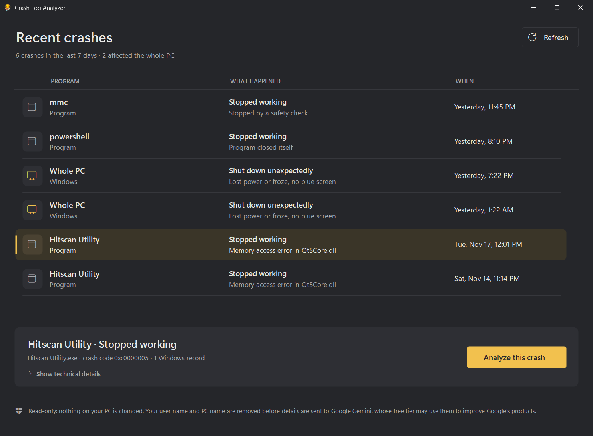
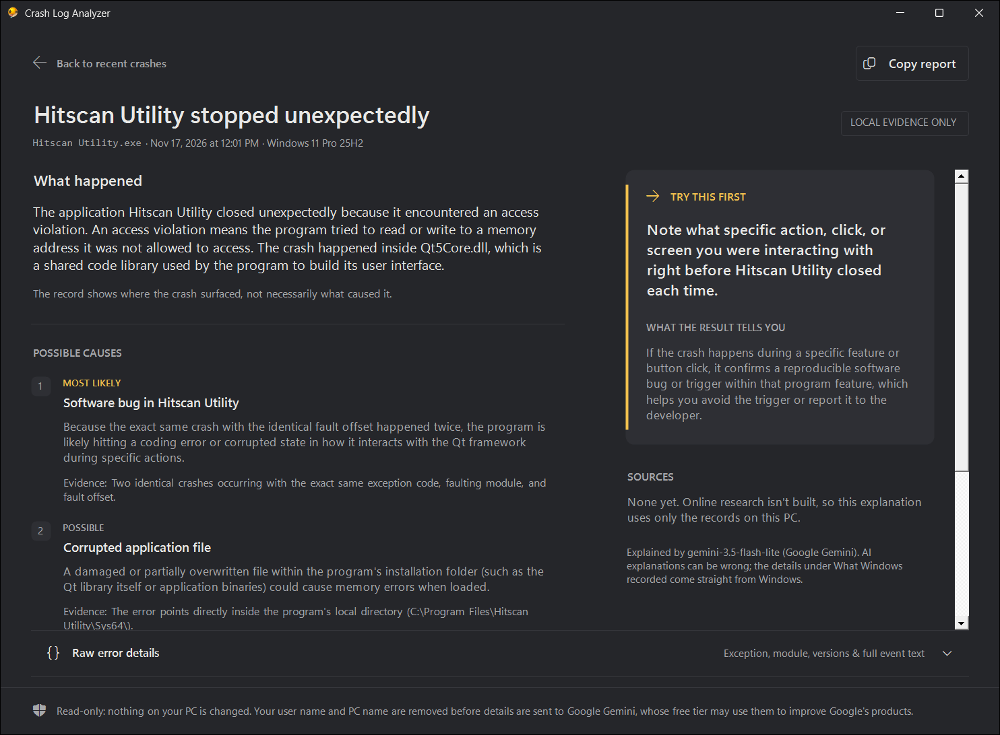

When a program or your whole PC crashes, Windows writes down what happened, but in codes almost nobody can read. Crash Log Analyzer finds those records, explains them in plain English, and tells you one thing to try first.
PowerShellWindows FormsGemini API
Step 1
Pick a crash
The app lists every crash from the last 7 days, both programs that stopped working and times the whole PC shut down unexpectedly. Repeat records from the same incident are grouped, so each crash shows up once.

Recent crashes: six records found, two of them whole-PC shutdowns.
Step 2
Get a clear answer
One click turns the record into a short report: what happened, the most likely causes ranked by the evidence, and one specific thing to try, with what the result would tell you. Facts Windows recorded stay separate from the AI's guesses.

The report for a memory access crash, with a next step the user can actually try.
How it works
Reads Windows' own recordsApp crashes, frozen programs, blue screens and sudden shutdowns from the system event logs.
Keeps your details privateYour user name, profile folder and PC name are swapped for placeholders before anything is sent.
Structured AI answersGemini must reply in a fixed format that matches the report, so every result has the same clear sections.
Changes nothingIt only reads records. Nothing on the PC is modified.
What I did
ProductTurned the difficulty of reading Windows crash logs into a guided flow, from picking an incident to a clear next step.
RequirementsDefined the user flow, report sections, and evidence rules that keep possible causes distinct from recorded facts.
PrototypeBuilt it with Gemini-generated explanations, structured outputs, and personal-identifier redaction.
A personal project, not available for download. Screenshots are from the working app on my own PC.